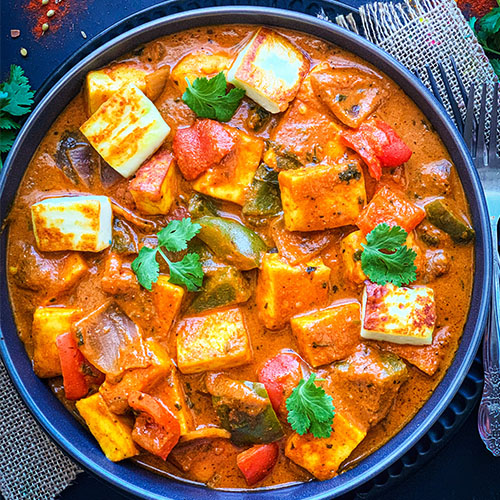

Paneer Tikka Masala

Description
Paneer Tikka Masala is an indian dish made of of paneer tikka cheese served in a spiced gravy.
It is considered to be a vegetarian alternative to cheicken tikka malasa.
Ingredients
- 1/4 cup butter
- 1 pound paneer, cut into 1/2-inch cubes
- 1 medioum green bell pepper, chopped
- 1 tablespoo ground cashews
- 1 teaspoon garlic paste
- 1 teaspoon ginger paste
- 1 teaspoon cayenne pepper
- 1 teaspoon ground coriander
- 1 teaspoon garam masala
- 1 can tomato sauce
- 1 pint half-and-half
- 1 teaspoon salt, or to taste
cooking Direction
- Step 1
- Melt butter in a skillet over medium heat. Add paneer; cook and stir until golden, about 5 minutes. Add onions, bell pepper, jalapeños, ground cashews, garlic paste, ginger paste, cayenne pepper, cumin, coriander, and garam masala;
cook and stir until well combined and fragrant, about 1 minute.
- step 2
- Mix tomato sauce, half-and-half, and salt into paneer mixture; simmer until thickened, about 30 minutes.
Back to main